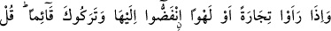
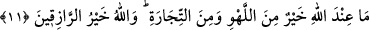

kaydedilmiştir.
11. Onlar bir ticaret ve eğlence gördükleri zaman hemen dağılıp ona giderler ve
seni ayakta bırakırlar. De ki: Allah’ın yanında bulunan, eğlenceden ve ticaretten
daha yararlıdır. Allah, rızık verenlerin en hayırlısıdır.
“Onlar bir ticaret ve eğlence gördükleri zaman hemen dağılıp ona giderler ve seni
ayakta bırakırlar.” yâni Dihye b. Huleyf el-Kelbî’nin ticaret kervanı olduğunu
anladıkları ve kendisi için çok gerekli ve önemli olan şeyden insanı alıkoyan bir
eğlence duyduklarında hemen dağılıp oraya giderler. Bir kimseyi önemli olan şeyden
alıkoyduğu zaman, böyle alıkoydu denir. Buradaki eğlenceden maksad davul sesidir.
Ona kaba eğlence denir. Dihye kervaniyle geldiğinde bilinmesi için davul çaldırırdı.
Kâşifî’nin dediği gibi; kervan ulaştığında sevinç davulları çalınırdı. Zamanımız gemi
sâhiplerinin, geldiklerini bildirmek için top atarak ilan etmeleri gibi. Yahut kervan
develeri geldiğinde şehir sâkinleri onları karşılayıp davullar, defler çalarak ve
alkışlamak sûretiyle karşılarlardı. Eğlenceden maksad işte budur.
Tâcü’l-Mesâdir adlı eserde de belirtildiği gibi, eğlence yerilmiş bulunduğu, ticaret
ise faydalanıldığı ve kendisine ihtiyaç duyulduğundan dolayı eğlence değil de dağılıp
kendisine gidilen şeyin ticaret olduğu anlaşılmıştır. Dağılıp gidenlerin içinde yalnız
davul dinleyip görmek için gidenlerin de bulunduğunu göstermek için de “yahut”
denilmiş olabilir. Kaba olmasına rağmen davul sesi eğlence olursa, ya çalgı ve çengi
gibi şeylerin durumu ne olur!
Rivâyet edildiğine göre Dihye b. Kelbî, Medine’ye Şam’dan bir ticaret kervaniyle
geldiği zaman henüz müslüman olmamıştı. O zaman Medine’de açlık, pahalılık ve
sıkıntı vardı. Bu kervanda da ihtiyaç duyulan buğday, un, zeytin yağı ve benzeri bütün
maddeler vardı. O esnada Rasûlullah (a.s.) cuma hutbesini okumakta idi. Mesciddekiler
kervanın geldiğini anlayınca ona yetişemeyecekleri endişesiyle kalkıp gittiler.
Peygamberimiz’le (a.s.) beraberinde, yalnız sekiz, onbir, on iki ya da kırk kişiden fazla
kimse kalmıştı. Onlar da Ebû Bekr, Ömer, Osman, Ali, Talha, Zübeyr, Sa’d b. Ebi
Vakkas, Abdurrahman b. Avf, Ebû Ubeyde b. Cerrâh, Saîd b. Zeyd, Bilal ve Abdullah b.
Mesud’dur. Bir rivâyette Abdullah yerine Ammâr b. Yâsir olduğu zikredilmiştir.
Müslim Câbir (r.a.)’in de onların arasında bulunduğunu nakletmiştir. Yine aralarında bir
kadının da bulunduğu rivâyet edilmiştir. Bunun üzerine Rasûlullah (s.a.)
“Muhammed’in canı kudret elinde olan Allah’a yemin edirim ki, şâyet hiç kimse
kalmamak üzere hepsi çıkıp gitmiş olsalardı Allah bu vâdiyi üzerlerine ateşle